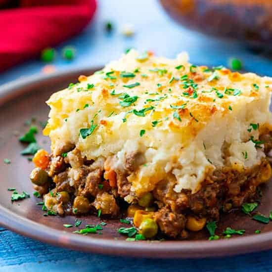

Shepard's Pie

Description
Ingredients
- 2 pounds lean ground beef
- 1 cup chopped onion
- 3 cloves garlic, minced
- 1 package frozen mixed baby carrots and peas
- 1/2 cups beef broth
- 1/4 cup tomato paste
- 1 tablespoon Worcestershire sauce
- 1 tablespoon dried Italian seasoning
- 1 pound potatoes
- 1/2 teaspoon salt
- Black pepper
- 1 cup shredded Cheddar cheese
- Paprika
- 1/2 liter Guinness
- Chopped fresh parsley
Steps
- Gather all ingredients
- Cook ground beef and onion in a skillet over medium heat
until beef is browned and onion is tender. Add garlic.
- Add tomato paste, Worcestershire sauce, seasoning, salt and pepper and stir the mixture well.
Wait until tomate paste is integrated with beef and is cooked a bit.
- Add Guiness to the mixture and deglaze the bottom of the pan by stirring.
Then let it cook until the fluids in the mixture reduces a bit.
- Cook potatoes and mash them after they are cooked. Mix the mashed potato with cheese.
- Get the ground beef mixture in a slow cooker pan. Distribute it evenly in the pan then cover it with mashed potato.
- Cook it in the oven at 200°C for 20 minutes.
- Garnish it with paprika and parsley.
Home